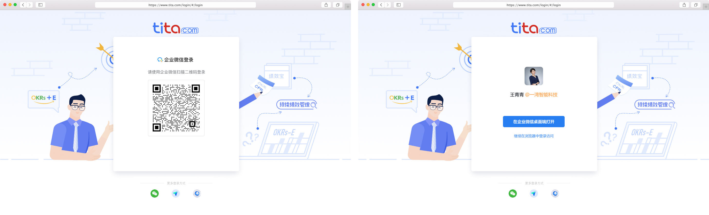
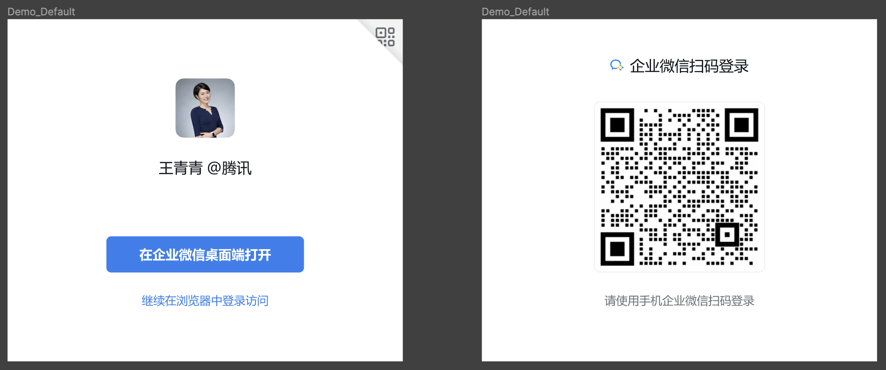
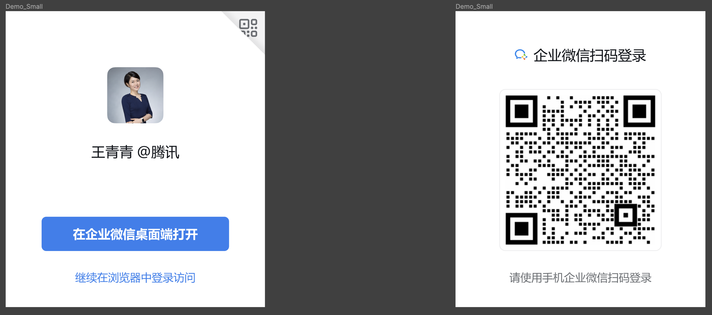

Web登录组件
最后更新：2025/11/12
目录
@wecom/jssdk 初始化企业微信登录组件概述
企业微信支持开发者使用以下方式来进行Web登录
- 系统浏览器（桌面端）
- 企业微信内置
Webview（桌面端&移动端）
1. 使用 @wecom/jssdk 初始化企业微信登录组件
为了满足网站定制化的需求，我们支持将企业微信登录组件内嵌到开发者的网站中。用户使用企业微信登录授权后，登录组件将 auth code 返回给网站。
企业微信登录组件主要用途：网站希望用户在网站内就能完成登录，无需跳转到企业微信域下登录后再返回，提升登录的流畅性与成功率。

开始使用
使用企业微信 JS-SDK：@wecom/jssdk >=1.3.1
API接口
2. 构造企业微信登录链接
同时支持通过构造链接的方式，在新窗口中打开企业微信登录页面，用户使用企业微信登录授权后通过将携带 auth code 跳转至指定的 redirect_uri 。
链接格式
开发者需要构造如下的链接来获取 code 参数
https://login.work.weixin.qq.com/wwlogin/sso/login?login_type=LOGIN_TYPE&appid=APPID&redirect_uri=REDIRECT_URI&state=STATE
参数说明
| 参数名 | 类型 | 必填 | 说明 |
|---|---|---|---|
| login_type | string | 是 | 登录类型。ServiceApp：服务商登录；CorpApp：企业自建/代开发应用登录。 |
| appid | string | 是 | 登录类型为企业自建应用/服务商代开发应用时填企业 CorpID，第三方登录时填登录授权 SuiteID |
| agentid | string | 否 | 企业自建应用/服务商代开发应用 AgentID，当login_type=CorpApp时填写 |
| redirect_uri | string | 是 | 登录成功重定向 url，需进行 URLEncode注意域名必须配置为可信域名，详见下文的“redirect_uri域名说明” |
| state | string | 否 | 登录 state用于保持请求和回调的状态，授权请求后原样带回给企业。该参数可用于防止 CSRF 攻击（跨站请求伪造攻击），建议带上该参数，可设置为简单的随机数加 session 进行校验需进行 URLEncode |
| lang | string | 否 | 语言类型。zh：中文；en：英文。 |
redirect_uri域名说明
redirect_uri的域名必须配置为可信域名，不同应用类型的配置方法不同，具体如下
| 应用类型 | 域名配置方法 |
|---|---|
| 自建应用 | OAuth可信域名或者Web网页授权回调域名 |
| 代开发应用 | OAuth可信域名或者Web网页授权回调域名 |
| 第三方应用 | “登录授权”的可信域名 |
返回说明
用户允许授权后，将会重定向到 redirect_uri 的网址上，并且带上 code 和 state 参数
redirect_uri?code=CODE&state=STATE
示例1：自建应用
企业CorpID：WWCorpId 开启授权登录的应用ID：1000000 登录跳转链接：http://work.weixin.qq.com state设置为：WWLogin 需要配置应用授权回调域名为：work.weixin.qq.com 根据URL规范，将上述参数分别进行UrlEncode，得到拼接的登录链接为： https://login.work.weixin.qq.com/wwlogin/sso/login?login_type=CorpApp&appid=WWCorpId&agentid=1000000&redirect_uri=http%3A%2F%2Fwork.weixin.qq.com&state=WWLogin点击复制
示例2：代开发应用
企业CorpID：WWCorpId 开启授权登录的应用ID：1000000 登录跳转链接：http://work.weixin.qq.com state设置为：WWLogin 需要配置应用可信域名为：work.weixin.qq.com 根据URL规范，将上述参数分别进行UrlEncode，得到拼接的登录链接为： https://login.work.weixin.qq.com/wwlogin/sso/login?login_type=CorpApp&appid=WWCorpId&agentid=1000000&redirect_uri=http%3A%2F%2Fwork.weixin.qq.com&state=WWLogin点击复制
示例3：服务商
登录授权SuiteId：SuiteID 登录跳转链接：http://work.weixin.qq.com state设置为：WWLogin 需要配置登录授权回调域为：work.weixin.qq.com 根据URL规范，将上述参数分别进行UrlEncode，得到拼接的登录链接为： https://login.work.weixin.qq.com/wwlogin/sso/login?login_type=ServiceApp&appid=WWCorpId&redirect_uri=http%3A%2F%2Fwork.weixin.qq.com&state=WWLogin点击复制
登录FAQ
- 1. 企业微信登录面板为什么没显示快速登录？
企业微信Web登录组件，默认会显示二维码登录，当满足以下条件时，会显示快速登录面板：- 用户的企业微信桌面端（
Win&Mac）版本大于3.1.23，运行并登录企业微信 - 使用
@wecom/jssdk初始化企业微信登录组件时，开发者网页域名需使用HTTPS协议 - 在自建/代开发应用的登录场景中（
login_type=CorpApp），当前企业微信桌面端登录用户，在所登录应用的可见范围内 - 登录网页在桌面端系统浏览器中打开。如果需要在企业微信内置
Webview进行登录，请使用OAuth授权登录 - 快速登录组件目前仅支持主流的桌面端浏览器，包括QQ浏览器、谷歌chrome浏览器、微软edge浏览器、firefox浏览器、搜狗浏览器、360浏览器、猎豹浏览器、Maxthon傲游浏览器
- 用户的企业微信桌面端（
- 2. 如何判断用户是否已登录企业微信桌面端？
登录组件在初始化成功后，开发者可以通过onCheckWeComLogin回调中的isWeComLogin参数，判断企业微信的桌面端登录状态。
建议使用场景：如开发者在知道当前用户已登录企业微信后，直接显示企业微信快速登录面板，用户一键点击快速登录，提升用户体验。 - 3. 扫码提示无权限
在自建/代开发应用登录场景，若用户不在Agentid所指应用的可见范围，扫码时会提示无权限。 - 4. 登录组件支持自定义样式吗？
不支持自定义登录组件样式，可通过panel_size参数定义登录组件面板大小 - 5. 提示“页面域名与登录授权域名不一致”
当指定参数redirect_type=callback时，需检查业务页面域名与redirect_uri域名的一致性 - 6. Chrome 142+新版本无法快速登录
企业微信快速登录适配 Chrome 142+指引文档
Chrome 142+ 版本加强了页面对网络请求的安全限制，需业务开发者将企业微信JSSDK@wecom/jssdk升级至>=2.3.2版本，用户可正常使用快速登录能力。
附录
1. 登录相关错误码
登录组件将用户在登录成功前遇到的错误通过 onLoginFail 函数回调，便于开发者排查问题。
| 错误码 | 释义 |
|---|---|
| -31020 | redirect_uri 与配置的登录授权调域名不一致 |
| -31027 | appid 参数错误 |
| -31028 | agentid 参数错误 |
| -31033 | 校验请求来源错误 |
| -31034 | 该企业不是服务商 |
| -31035 | redirect_uri 不能为空 |
| -31037 | appid 非登录授权应用 |
| -31039 | redirect_uri 与配置的可信域名不一致 |
| -31040 | login_type 参数错误 |
2. 企业微信登录组件UI规范
默认情况下，登录组件的宽高为480x416px

可通过panel_size字段指定为更小的面板 320x380px

注：建议使用“旧版扫码登录”的开发者按该文档切换为新的方式，该方式后续将支持更多功能